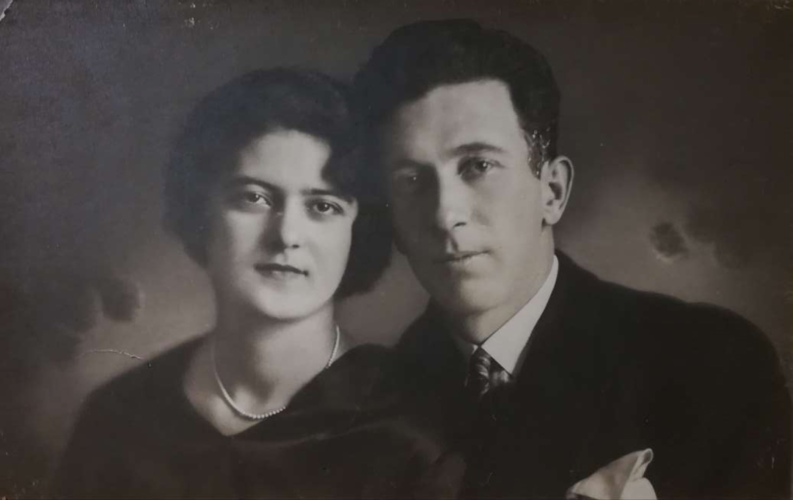

Συνταγές, κρασί και ιστορίες από ένα τραπέζι κάτω από τον κυκλαδίτικο ήλιο. Μαγειρεύω γιατί είναι ο πιο εύκολος τρόπος να πω ιστορίες.

Μια κρεατόπιτα από το Βελιγράδι, η συνταγή μιας σπάνιας γυναίκας γεννημένης το 1908, που την περιχύνεις με αυγά, στραγγιστό γιαούρτι και ανθρακούχο νερό.